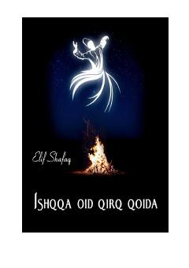

IOInson hayotini tubdan o'zgartiruvchi ishq va ma'naviy izlanishlar haqidagi ta'sirli roman.
Asar Ella Rubinshteyn ismli ayolning sokin va tartibli hayotining kutilmaganda o'zgarishi haqida hikoya qiladi. Roman ikki xil davrni — zamonaviy hayot va Rumiy bilan Shams Tabriziy o'rtasidagi ma'naviy bog'liqlikni o'zida mujassam etadi.